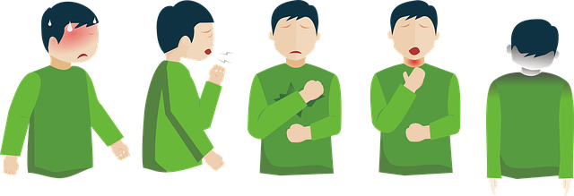

COVID-19 affects different people in different ways. Most infected people will develop mild to moderate illness and recover without hospitalization. Most common symptoms: fever dry cough tiredness Less common symptoms: aches and pains sore throat diarrhoea conjunctivitis headache loss of taste or smell a rash on skin, or discolouration of fingers or toes Serious symptoms: difficulty breathing or shortness of breath chest pain or pressure loss of speech or movement Seek immediate medical attention if you have serious symptoms. Always call before visiting your doctor or health facility. People with mild symptoms who are otherwise healthy should manage their symptoms at home. On average it takes 5–6 days from when someone is infected with the virus for symptoms to show, however it can take up to 14 days.
Protect yourself and others around you by knowing the facts and taking appropriate precautions.